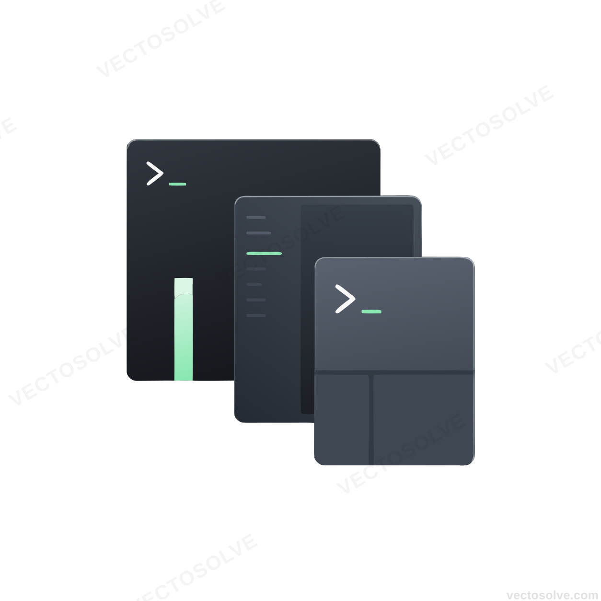

The CLI-First Wayland Compositor
A pane-based, scriptable desktop environment built in Rust. Everything is a command. Everything is searchable. Everything is a pane.
curl -sSf https://slate.dotfiles.qzz.io/install.sh | bash
Why Choose Slate-DE?
Built for power users who demand performance, flexibility, and full control over their desktop environment.
Command-Centric Architecture
Every system action is exposed via a unified command registry. Window management, system control, and vision analysis - all accessible through a single, scriptable interface. Integrate with your existing workflows seamlessly.
Learn about the command system →WASM Plugin Ecosystem
Extend Slate-DE with low-latency WebAssembly plugins. Write extensions in any language that compiles to WASM - Rust, C, C++, Go, and more. Sandboxed for security, fast for performance.
Build your first plugin →Vision-Aware Computing
Integrated OCR and object detection capabilities. Query the text content of any application surface. Automate workflows based on what's visible on screen. Local and cloud OCR providers supported.
Explore vision features →TUI-Native Rendering
Render Ratatui frames directly to Wayland SHM buffers. Zero terminal overhead, native performance. Build beautiful terminal interfaces that run at desktop speed. Perfect for system monitors, dashboards, and more.
See TUI examples →Global Search & Command Palette
Instant access to everything. Fuzzy-find commands, panes, applications, and vision-indexed text. Inspired by VS Code's command palette but system-wide. Keyboard-driven productivity at its finest.
Customize search →Advanced Layout Engine
Hierarchical node tree for complex layouts. Tiling, floating, tabbed, and stacked layouts. Per-workspace layout rules. Scriptable layout algorithms. Your desktop, your rules.
Configure layouts →See It In Action
Watch how Slate-DE transforms your workflow
$ slate --version
Slate-DE 0.1.0
$ slate cmd list
Available commands:
- window.focus
- window.move
- workspace.switch
- vision.ocr
- plugin.list
...
$ slate window focus --direction left
$ slate workspace switch --number 2
$ _$ slate vision ocr --window active
Scanning active window...
Found text:
"Welcome to Slate-DE"
"Installation Complete"
"Run 'slate-de' to begin"
$ slate vision search "installation"
Found 3 matches across 2 windows
$ _$ slate plugin install wallpaper-random
Installing wallpaper-random v1.2.0...
Installed successfully!
$ slate plugin list
Installed plugins:
- wallpaper-random (active)
- system-monitor (active)
- git-status (inactive)
$ _Modular, Extensible Architecture
Built with Rust's safety and performance. Designed for extensibility from day one.
# Core Components
slate-de/
├── core/ # Reactive state management & node graph
├── compositor/ # Smithay-powered Wayland server
├── renderer/ # High-performance TUI pipeline
├── commands/ # Unified command registry
├── vision/ # Local & Cloud OCR providers
├── plugins/ # WASM sandboxed runtime
├── cli/ # Primary entry point
├── config/ # Configuration management
└── docs/ # Documentation
# Key Dependencies
smithay # Wayland compositor library
ratatui # Terminal UI framework
wasmtime # WebAssembly runtime
tokio # Async runtimeWorkspace Members
Each component is a separate Rust crate with clear boundaries and well-defined APIs.
Async-First
Built on Tokio for non-blocking operations. Responsive even under heavy load.
Type-Safe
Rust's type system prevents entire classes of bugs at compile time. Safety without sacrifice.
Get Started in Minutes
One command is all it takes. Slate-DE handles the rest.
System Requirements
- OS: Linux (any modern distribution)
- RAM: 4GB minimum, 8GB recommended
- Graphics: GPU with Mesa support
- Dependencies: Automatically installed by the script
Supported Distributions
Documentation & Resources
Everything you need to master Slate-DE
Getting Started Guide
Step-by-step tutorial for new users. From installation to your first custom command.
Configuration Reference
Complete reference for slate.toml. All options explained with examples.
Command API
Documentation for the unified command registry. Learn to script your desktop.
Plugin Development
Guide to building WASM plugins. Extend Slate-DE with your own features.
Examples & Snippets
Real-world configurations and plugin examples from the community.
Community Support
Get help, report bugs, and contribute. Join our growing community of power users.
Frequently Asked Questions
Everything you need to know about Slate-DE
What makes Slate-DE different from other window managers?
Slate-DE is built from the ground up with a unified command interface. Every action - from window management to vision analysis - is exposed as a command. This makes it infinitely scriptable and integrable with your existing workflows. Plus, it's built in Rust for safety and performance.
Can I use Slate-DE with my existing setup?
Yes! Slate-DE is designed to be flexible. You can run it as a full desktop environment or integrate components into your existing setup. The modular architecture means you only use what you need.
How do WASM plugins work?
WASM plugins are WebAssembly modules that run in a sandboxed environment (Wasmtime). You can write plugins in any language that compiles to WASM - Rust, C, C++, Go, and more. They're secure, fast, and can be hot-reloaded without restarting Slate-DE.
Is Slate-DE ready for daily use?
Slate-DE is currently in active development (v0.1.0). While the core features are functional, we recommend it for developers and enthusiasts who enjoy tinkering. For production use, we suggest waiting for v1.0.0 stable release.
How does the vision/OCR feature work?
Slate-DE captures application surfaces and runs OCR (Optical Character Recognition) on them. You can search for text across all your windows, automate workflows based on visible content, and even query what's on screen through the command interface.
Can I contribute to Slate-DE?
Absolutely! Slate-DE is open-source (MIT/Apache 2.0). Check out our GitHub repository, join our community discussions, and submit PRs. We welcome contributions of all kinds - code, documentation, plugins, and feedback.
How Slate-DE Compares
See how Slate-DE stacks up against popular alternatives
| Feature | Slate-DE | Sway | i3 | Hyprland |
|---|---|---|---|---|
| Language | Rust | C | C | C++ |
| Unified Command Interface | Yes | No | No | No |
| WASM Plugin Support | Yes | No | No | Partial |
| Integrated Vision/OCR | Yes | No | No | No |
| TUI-Native Rendering | Yes | No | No | No |
| Scriptable | Yes (Any WASM language) | Limited (IPC) | Limited (IPC) | Limited (Config) |
| One-Click Install | Yes | No | No | No |
| Performance | Excellent | Excellent | Excellent | Very Good |
Performance Benchmarks
Slate-DE is built for speed and efficiency
See Slate-DE in Action
Watch how Slate-DE transforms your workflow
Want to see more? Check out our demos wiki page.